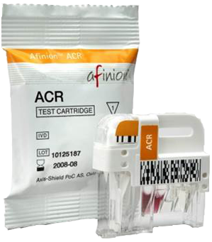

HbA1c反映2-3个月平均血糖水平，降低HaA1c 与降低并发症的风险密切相关。只有通过NGSP认证的 HbA1c才可用于糖尿病的监测和诊断。
Product Demonstration
产品展示
Afinion HbA1c

膀胱癌辅助诊断与监测
采用特异的单克隆抗体识别并反应显色，对尿液 中NMP22含量的检测，用于辅助膀胱癌诊断；高危 无症状人群筛查；膀胱癌人群治疗后的复发与监测。

Afinion ACR
测定ACR可最早期发现糖尿病或高血压并发的肾 脏疾病，如及时诊疗，病情有可能逆转，避免进展为 尿毒症、心力衰竭等事件。
Derermine HIV1/2&Derermine TP
免疫层析法（胶体硒标记技术）快速检测全血/ 血清/血浆/末梢静脉血中HIV1/2&TP,及早发现急性 感染期感染者，阻断传播途径。
甲型/乙型流感病毒抗原检测试剂盒
采用免疫层析法（乳胶粒子），用于定性检出 咽拭子中的甲型流感病毒或乙型流感病毒抗原，辅 助诊断甲型/乙型流感病毒感染症。
Afinion AS100 Analyzer
快速检测血液中糖化血红蛋白（HbA1c）、尿微 量白蛋白/肌酐比值（ACR），用以评估糖尿病、肾 损伤、炎症感染、血脂检测等疾病。
epoc血气分析仪
利用电极对动静脉血（末梢血）中酸碱度（PH）、 二氧化碳分压（PCO2）和氧分压（PO2）等相关指 标进行测定，能够把病人的结果直接从仪器主机无线 传送至病人的电子病历中。
心脏功能五项联检测试板
采用荧光免疫法快速、定量、同步检测抗凝全血 中五项标志物，来判断潜在病因引起的包括急性心 肌损伤（AMI）、急性冠脉综合症（ACS）、充血性 心力衰竭（CHF）和肺栓塞（PE）。
epocBGEM血气测试卡
利用电极原理对动静脉血（末梢血）中：PH值、 二氧化碳分压PCO2、 氧分压PO2、Na+、K+、 Ca++ 、乳酸Lac 、葡萄糖Glu、红细胞压积Hct及正 在申请中的：肌酐Crea 、 Cl-等九项指标的检测。

心肌损伤测试板（三项联检）
采用（荧光免疫法）快速、定量、同步检测抗凝全 血三项心肌损伤标志物，来判断心肌是否受损以及受损 的严重程度，以诊断心肌梗塞。
C. DIFF QUIK CHEK COMPLETE
快速诊断抗生素相关腹泻，采用酶联免疫层析 法快速检测粪便中艰难梭菌抗原及毒素，辅助治疗 艰难梭菌感染引起的腹泻疾病及合并疾病。
荧光免疫分析仪
检测系统通过EDTA抗凝全血提供全方位的检测 及管理解决方案，包括数据报告、读数、操作者管 理和质控分析。